以上 7 组新图均未覆盖正式游戏资产。请逐组审看清晰度、恐怖感与日恐手绘风格是否一致，勾选审核意见后点底部按钮复制发回给我。
替换原本偏糊的 dawen_portrait_004.png。24 岁香港电气检修青年，经典日恐厚涂像素质感，冷暗绿阴影。
实装说明：定稿后将同步据此高清风格重绘大文八方向行走图。
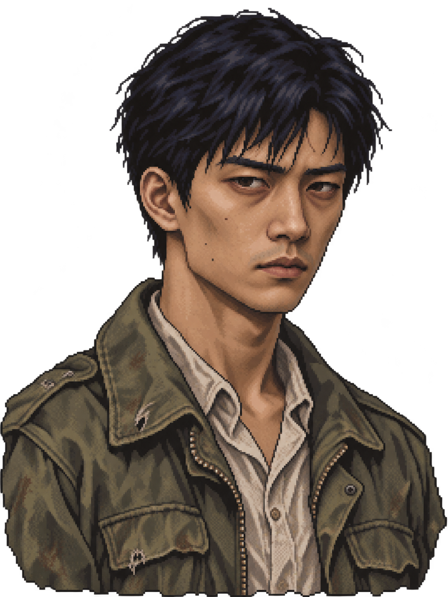
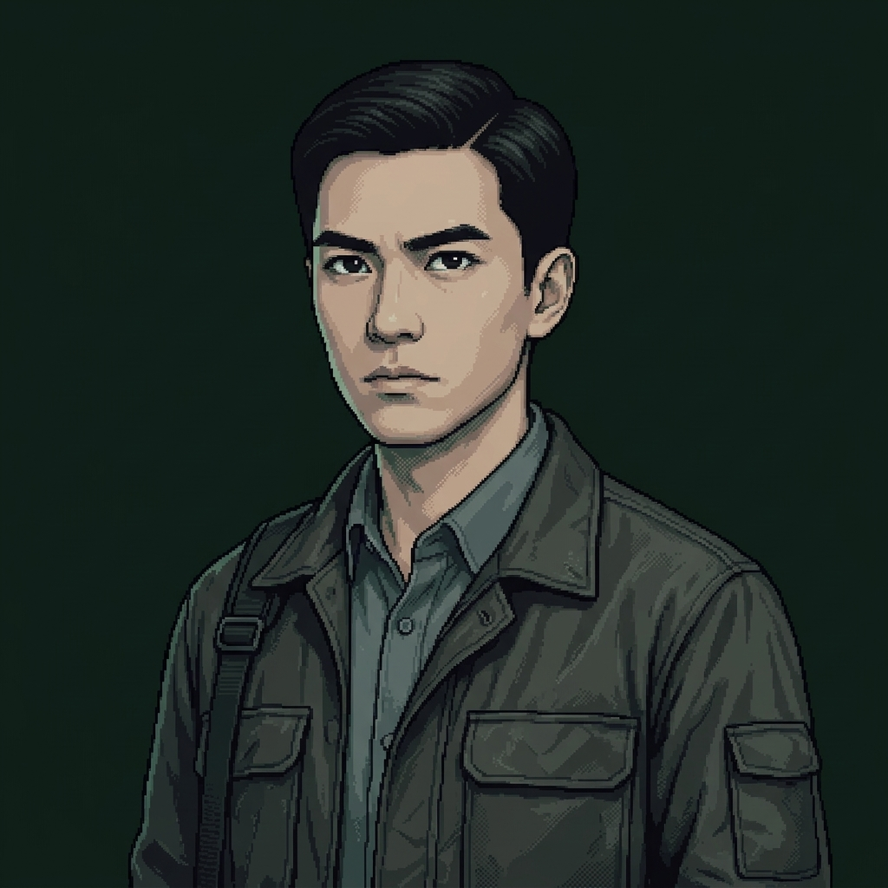
替换原本偏糊的 ahhao_portrait_252.png。19 岁挂单反相机带少年形象，经典日恐 RPG 对话半身像。
实装说明：定稿后将同步重绘序章阿豪高清八方向行走图。
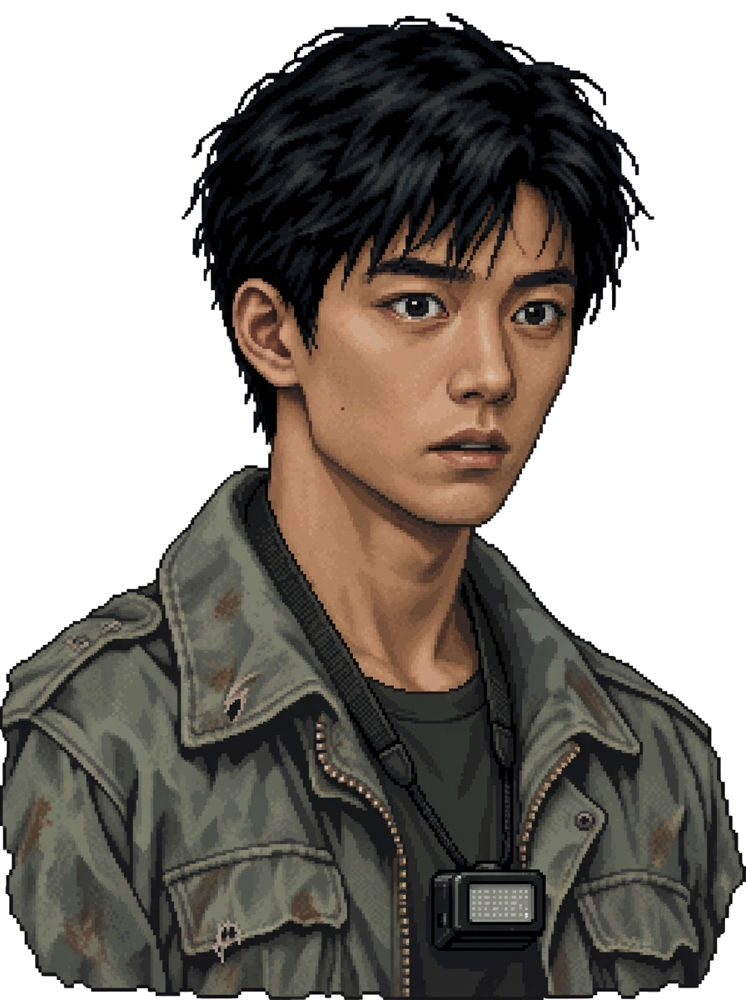
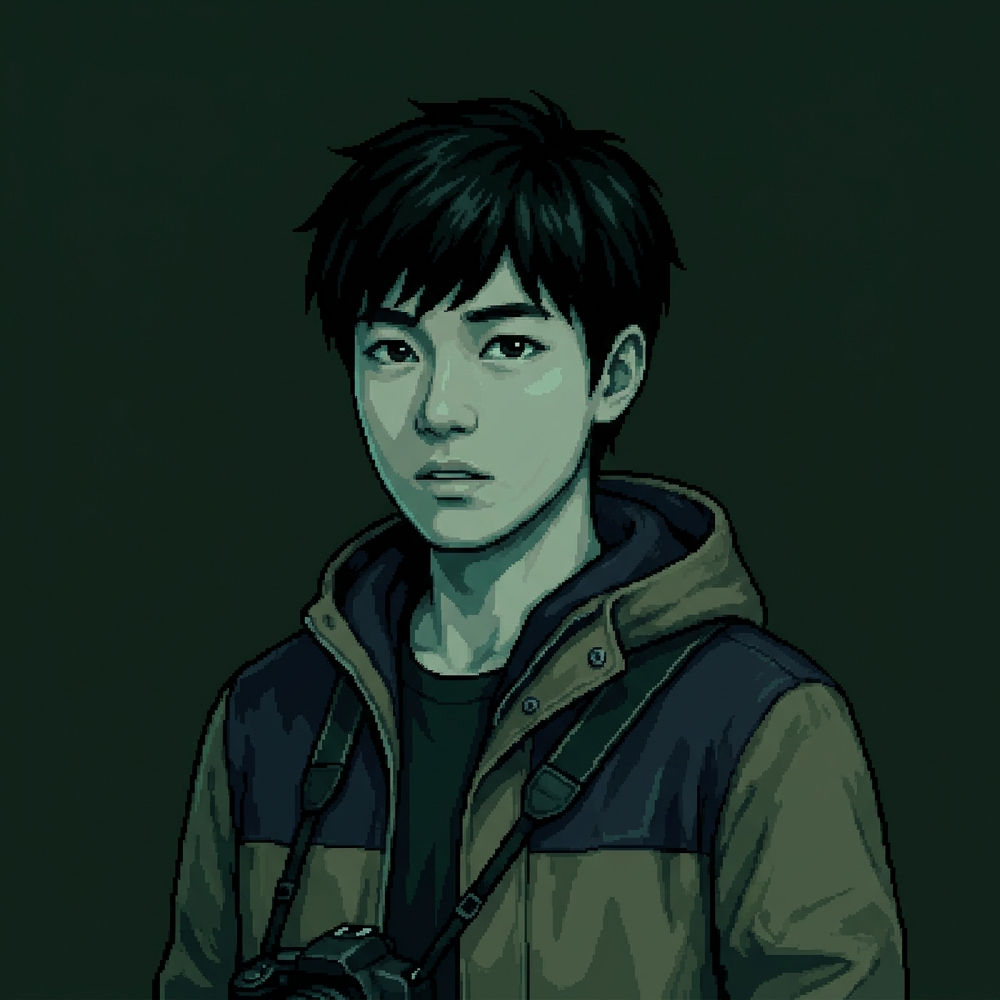
用于 99 级石阶与防空洞主追逐（只留 1 只高速追逼）。惨白扭曲偏长脖颈、黑长发遮脸、湿濡灰白寿衣。
实装说明：定稿后拆帧制作八向/前后扑抓动画，并把 99 级石阶正式替换为该单只怨灵。
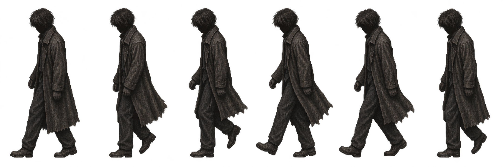
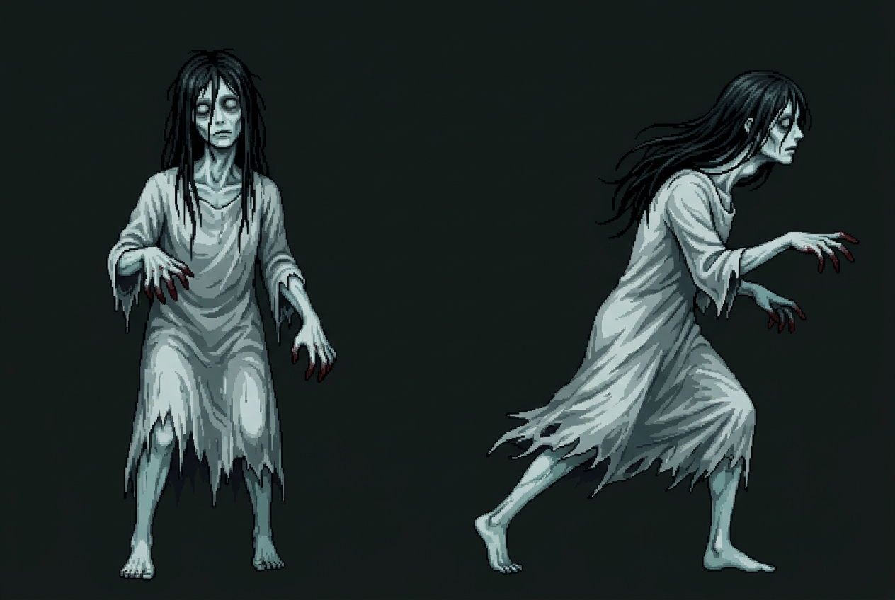
对照序章走廊被利爪扑杀的惨死部位：肩胸大片撕裂血痕、左臂残缺垂断淌血、面色青白步履蹒跚，配合多句催命哀求。
实装说明：定稿后拆帧接入 99 级台阶，替代原本完好无伤的幻影图。
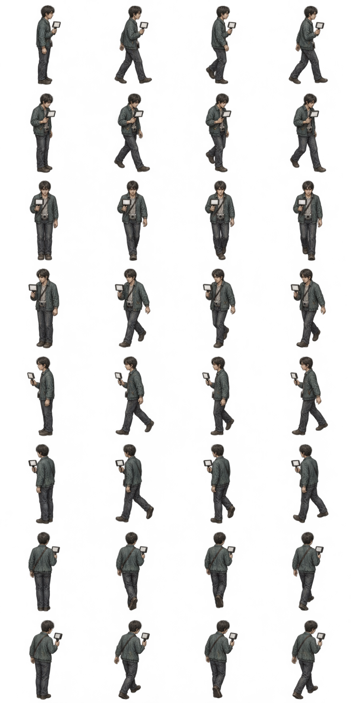
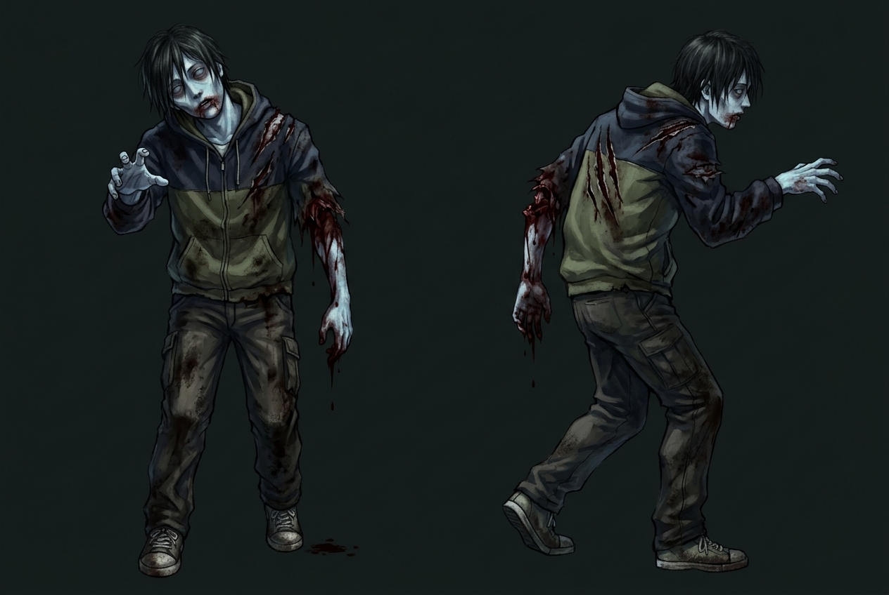
修正你指出的“旧照后面不该是百叶木门，应是铁质通道”。斑驳锈蚀重铁门微开，露出潮湿狭窄老铁皮维护暗道。
实装说明：Batch 3 同步更新 304 场景贴图与“铁通道/铁皮门”对应文字描述。
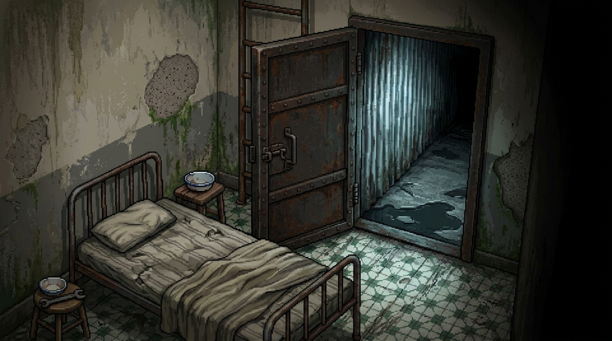
门外响起异样敲门时，允许玩家互动凑近黄铜猫眼查看——一只布满血丝的苍白诡异眼睛正死死贴在猫眼外侧直视你！
实装说明：将搭配二轮选定的高刺激惊吓音效一起接入 304 猫眼互动。
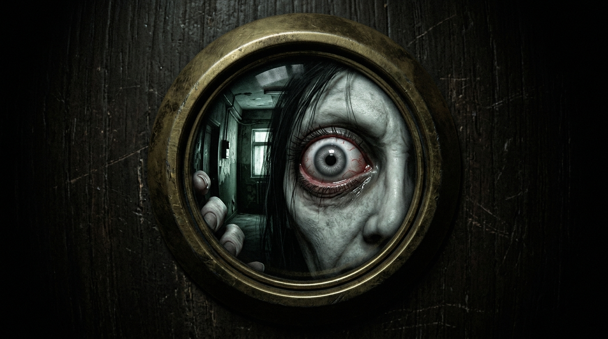
左侧：生锈搪瓷血盆里的血污叉烧包、破烂邮差绿制服与断手；右侧：带着银色尾戒与带血创可贴的嘉敏断指核心证物。
实装说明：将在 Batch 4 第三章肉铺重构与序章尾戒伏笔中实装。
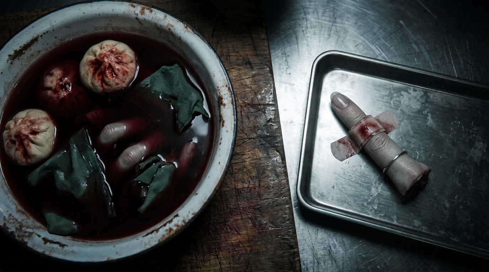